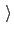
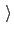

Next: Artificial boundary potentials (walls)
Up: Defining collective variables and
Previous: Defining collective variables and
Contents
Index
General options for a collective variable
The following options are not required by default; however, the first four are very frequently used:
-
name
 Name of this colvar
Name of this colvar
Context: colvar
Acceptable values: string
Default value: ``colvar'' + numeric id
Description: The name is an unique case-sensitive string which allows the
colvar module to identify this colvar unambiguously; it is also
used in the trajectory file to label to the columns corresponding
to this colvar.
-
width
Expected fluctuations amplitude, and resolution for grid-based methods
Context: colvar
Acceptable values: positive decimal
Default value: 1.0
Description: This number is a user-provided estimate of the fluctuation amplitude for the colvar. For example, it is recommended to set this number smaller than or equal to the standard deviation of the colvar during a very short simulation run. Biasing algorithms use this parameter for different purposes:
harmonic restraints (13.5.3) use it to set the physical unit of the force constant, the histogram
(13.5.6) and ABF biases
(13.5.1) interpret it as the grid spacing in the
direction of this variable, and metadynamics
(13.5.2) uses it to set the width of newly
added hills. This number is expressed in the same physical unit
as the colvar value.
-
lowerBoundary
Lower boundary of the colvar
Context: colvar
Acceptable values: decimal
Description: Defines the lowest end of the interval of ``relevant'' values for the colvar.
This number can be either a true physical boundary, or a user-defined number.
Together with upperBoundary and width, it is used to define a grid of values along the colvar (not available for colvars based on distanceDir, distanceVec, and orientation).
This option does not affect dynamics: to confine a colvar within a certain interval, the options lowerWall and lowerWallConstant should be used.
-
upperBoundary
Upper boundary of the colvar
Context: colvar
Acceptable values: decimal
Description: Similarly to lowerBoundary, defines the highest possible or allowed value.
-
hardLowerBoundary
Whether the lower boundary is the physical lower limit
Context: colvar
Acceptable values: boolean
Default value: off
Description: This option does not affect simulation results, but enables some internal optimizations.
Depending on its mathematical definition, a colvar may have ``natural'' boundaries: for example, a distance colvar has a ``natural'' lower boundary at 0. Setting this option instructs the colvars module that the user-defined lower boundary is ``natural''.
See Section 13.4 for the physical ranges of values of each component.
-
hardUpperBoundary
Whether the upper boundary is the physical upper limit of the colvar's values
Context: colvar
Acceptable values: boolean
Default value: off
Description: Analogous to hardLowerBoundary.
-
expandBoundaries
Allow to expand the two boundaries if needed
Context: colvar
Acceptable values: boolean
Default value: off
Description: If defined, biasing and analysis methods may keep their own copies
of lowerBoundary and upperBoundary, and expand
them to accommodate values that do not fit in the initial range.
Currently, this option is used by the metadynamics bias
(13.5.2) to keep all of its hills fully within
the grid. This option cannot be used when
the initial boundaries already span the full period of a periodic
colvar.
Next: Artificial boundary potentials (walls)
Up: Defining collective variables and
Previous: Defining collective variables and
Contents
Index
vmd@ks.uiuc.edu